The ritual is called Amatobiraki. The young "Mikanko" delivered dances to the heavens with the aid of sacred beasts that dwelled in the threshold between the world of man and the world of the divine, performing a sacred ceremony to summon the Kami of the Sun, who blessed them with her divine power. However, if the power of that generation's Mikanko wasn't enough, the heavens may have not answered.
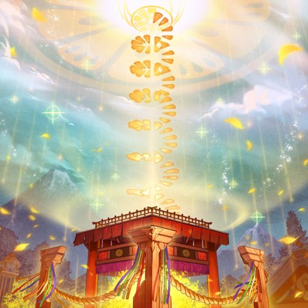
The descending Kami chose the Mikanko who performed the best dance, and used their body as a yorishiro to manifest in the mortal realm.
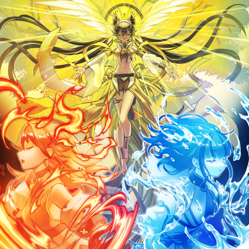
The chosen Mikanko was enshrined as the arahitogami "Ohime", and using the divine power they had received, they brought bountiful blessings to the world of man.
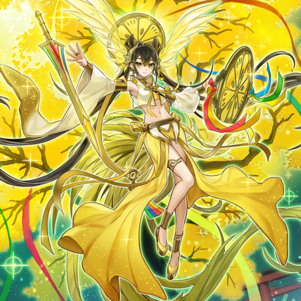
In order to fulfill the ritual that allowed "Ohime" to descend, girls were gathered as candidates to be Mikanko, who spent their days training. In the long-lasting relationship between the Kami and humans, the authority and skill of the Mikanko had been built upon a strict tradition of hereditary succession, in which the next generation of Mikanko were nurtured by three great families that had inherited three sacred treasures, and their branch families, in order to prepare for the next Amatobiraki.
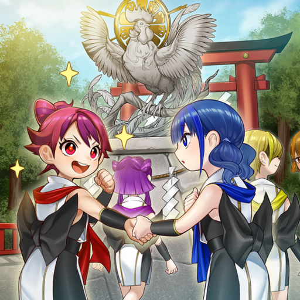
The first-generation Mikanko, possessing all the sacred treasures, along with the noble Tokoyo-no-Naganakidori as a sacred animal, were said to have had a deep relationship with Ohime. Hence for that reason, it was considered auspicious for chickens and roosters to become sacred animals, and it was the dream of young Mikanko candidates to make birds, or creatures stronger than them, into sacred animals.
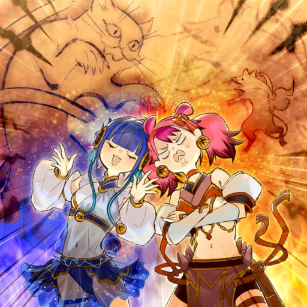
When the branch families are included, this was the most numerous clan, brought together by the physical strength of its head: the hot-blooded Mikanko of the previous generation. Ha-Re was her only daughter, who despised the trivial quarrels as her mother unified the various families, however her cheerful smile put everyone around her at ease. Her sacred animal was Hinezumi, the fire rat. The other Mikanko, except Ni-Ni, called her names like "Mousey" and "Ha-Re-Squeak", but Ni-Ni's sincerity gave her courage, allowing her to dedicated herself to her training. She had been feeling down since Ni-Ni was overtaking her, but ultimately, her potential was immeasurable.
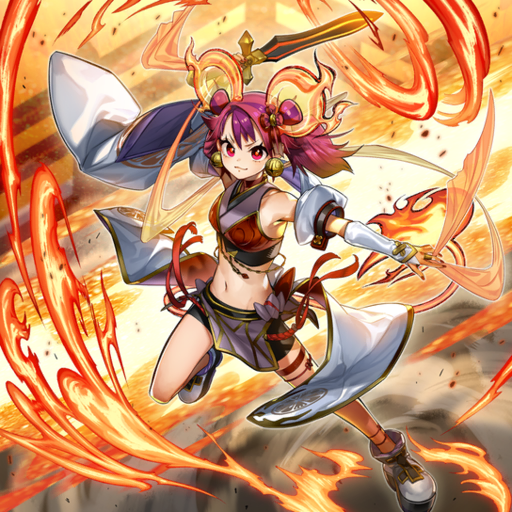
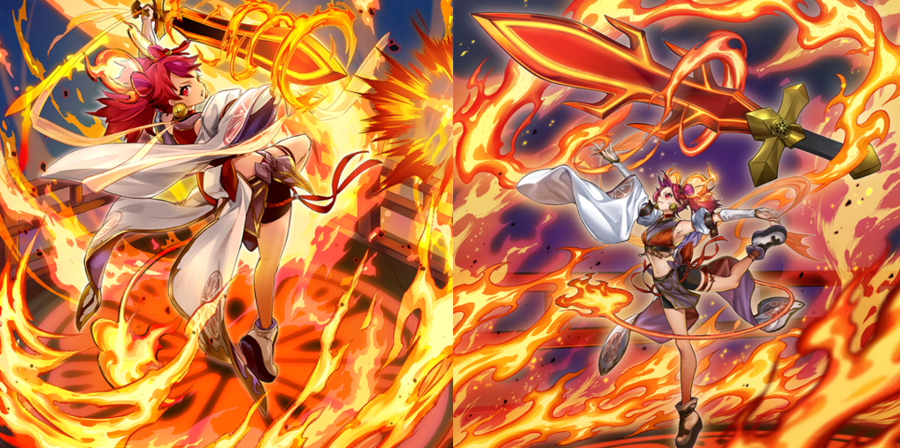
While they excelled in diplomacy, and their attitude of incorporating various diverse cultures had helped contribute to the growth of this house, this had also resulted in no small amount of animosity from the branch families and other family heads. Ni-Ni was their only daughter, who respected her parents for not binding her to traditionalist ideas, and in order to have their forward-thinking views recognized by others, Ni-Ni aspired to become the next Ohime using new forms of dancing. Her childhood friend, Ha-Re, had cheered her up many times when she was feeling weak when she was younger, but by then she was at that age where a girl gains a catty attitude about everything. Her sacred animal was Nekomata, the cat with two graceful, elegant tails. Both tradition and innovation had been polished and incorporated into her dances that shimmered like a mirror.
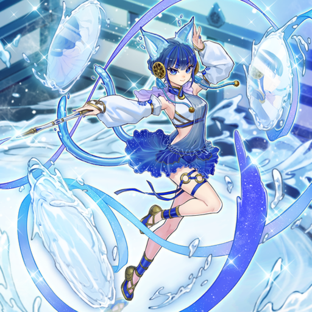
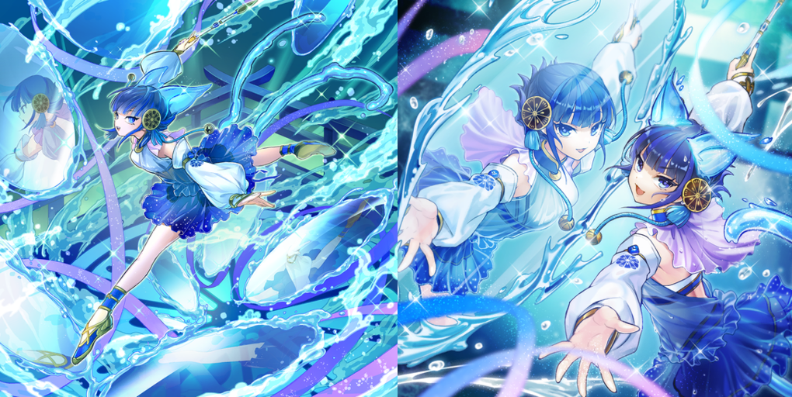
The most close-minded, insular, and strict clan. In order to keep the ancient style of dancing alive and unchanged, their Mikanko candidates had to go through a rigorous and incredibly-severe selection process to even be recognized by the head of the clan. Hu-Li was a girl born into one of the clan's branch families, and her sacred beast was Youko, the spirit fox. Because it was so rare for such a powerful sacred animal to dwell within someone, the branch family she belonged to were placing all of their hopes on her to make their status to sky-rocket. She was a year younger than Ha-Re and Ni-Ni, and was mischievous for her age, which was her own way of enjoying life, but behind the scenes, she had a deep sense of responsibility and resignation to what she had to do, while at the same time, she had a deeply-held desire for others to see and acknowledge her for herself, not just as a Mikanko.
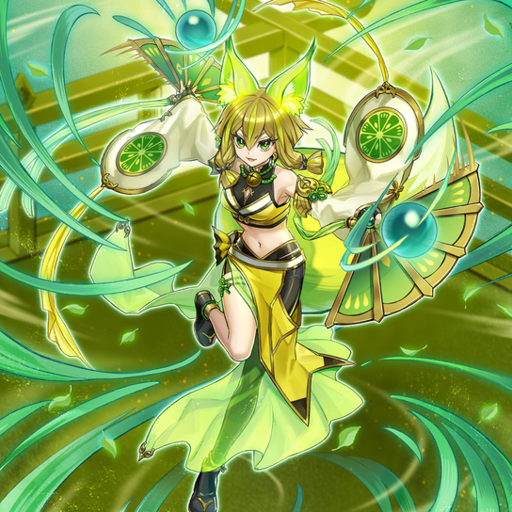
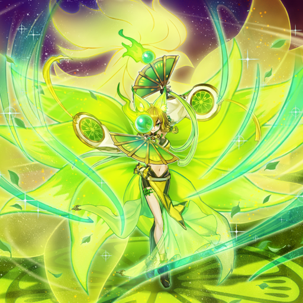
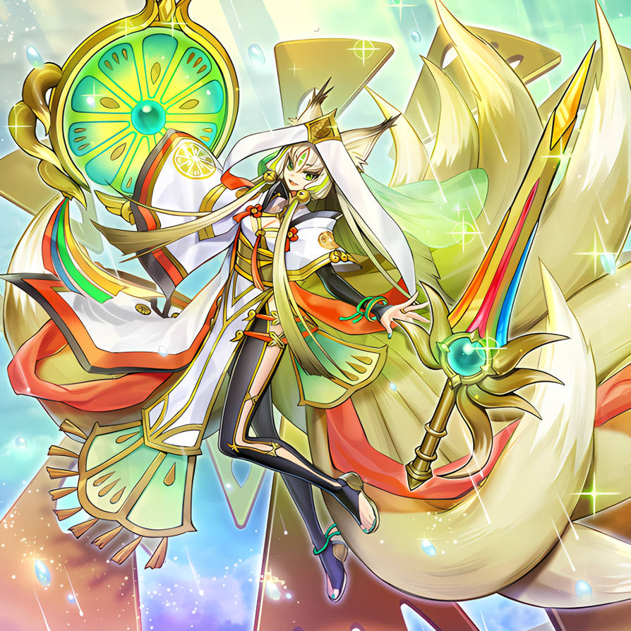
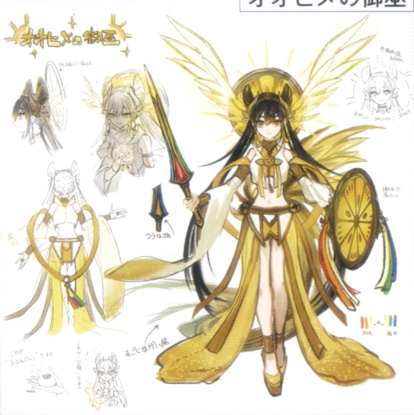
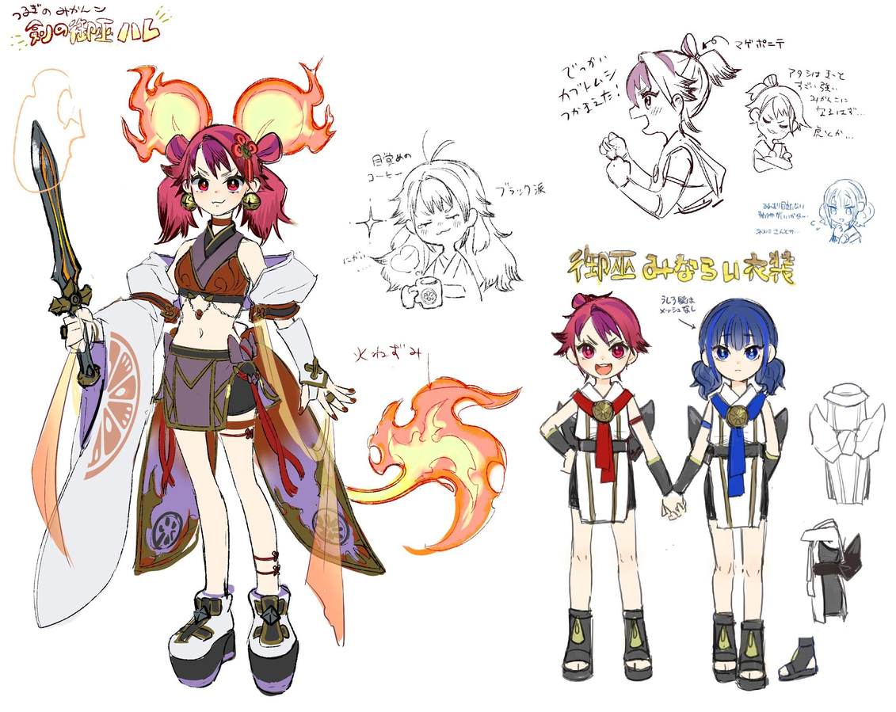